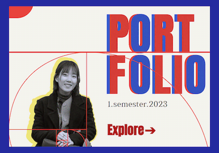
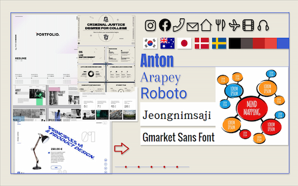
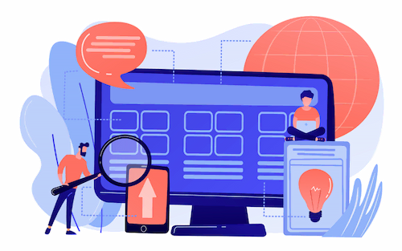
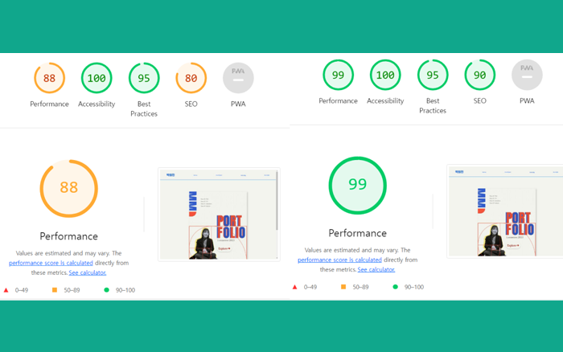

Tema 06
Portfolio
01. Hovedtemaer

- Viden
- Færdigheder
- Kompetencer
02. Formål
×
Målet med mit portfolio-website er at præsentere mine færdigheder,
viden og kompetencer, som jeg har tilegnet mig i løbet af første semester. Mit primære formål er at
udvikle og færdiggøre dette portfolio-website inden deadline. Efter
fuldførelsen vil jeg levere en præsentation af websitet.
03. Proces
Formål og målgruppe : Mit portfolio-site er designet specifikt til MMD-undervisere med henblik på at fremvise mine tidligere opgaver og demonstrere mine færdigheder og kompetencer. Siden er struktureret med én sektion pr. opgave og udvalgte visuelle elementer, der har til formål at give et overblik over mine præstationer i første semester. Mit mål har været at skabe et simpelt site, der let giver besøgende adgang til mine projekter.

Moodboard :
Før jeg påbegyndte oprettelsen af mit portfolio-site, foretog jeg desk research for at
finde inspiration. Gennem denne research samlede jeg bl.a. billeder, der afspejler den ønskede
stemninger og æstetik. Her har målet været at skabe en simpel æstetik uden for mange forskellige
farver, der dermed giver plads til
temaerne.
Crazy 8 : Efter deskresearch har jeg anvendt Crazy 8's metoden for at generere ideer til strukturen af websitet.

Wireframe : Jeg har lagt vægt på at skabe en simpel struktur for mit website. Wireframe-metoden er blevet brugt til at tydeligt visualisere og danne overblik over placeringen af billeder og tekst på websitet inden selve kodningen.

Styletile :
Jeg har konceptualiseret mit website med det formål at præsentere min identitet og mine
tidligere opgaver. Inspireret af Sydkoreas flag har jeg valgt rød og blå som hovedfarver. Der
anvendes forskellige skrifttyper til overskrifter og brødtekst med det formål at
tilbyde en
letforståelig struktur og gøre det nemt for folk at danne sig et overblik over indholdet. Jeg
har også brugt forskellige ikoner for at gøre oplevelsen mere intuitiv.

Prototype : Efter at have udvalgt min styletile, er jeg dykket ned i udviklingen af en prototype. Denne fase indebærer en mere detaljeret indsættelse af billeder og tekst for at sikre, at indholdet harmonerer optimalt. Formålet med prototypen har bl.a. været at kunne udføre testing, inden påbegyndelse af kodning.

Tænk-højt-test : I min designproces har jeg implementeret tænk-højt-testmetoden som et redskab til at opnå indsigter og feedback. Gennem denne test har jeg modtaget feedback, der tyder på, at skriftstørrelsen generelt er for stor, især i PC-versionen. Denne indsigt har tilladt mig at forbedre brugeroplevelsen på siden, op gøre den mere behagelig rent visuelt.
Tænk-højt-test : I min designproces har jeg implementeret tænk-højt-testmetoden som et redskab til at opnå indsigter og feedback. Gennem denne test har jeg modtaget feedback, der tyder på, at skriftstørrelsen generelt er for stor, især i PC-versionen. Denne indsigt har tilladt mig at forbedre brugeroplevelsen på siden, op gøre den mere behagelig rent visuelt.

Sitemap : Endnu et skridt jeg har benyttet før selve kodningen, har været udarbejdelsen af et sitemap, der viser hvordan de forskellige sider hænger sammen indbyrdes. Her har formålet være at opnå et klarere overblik over strukturen på mit website. At lave et sitemap relativt tidligt i processen, har gjort det nemmere at bevare en fornuftig struktur under udbyggelsen af siden.

Layoutdiagram : For at guide kodestrukturen har jeg udarbejdet et layoutdiagram. Dette diagram tjener som en vejledning for, hvordan elementerne skal organiseres og samarbejde i koden.
Kode : Jeg har i dette projekt implementeret noget ny kode med det formål at skabe en tidslinje. Denne kode er designet til at organisere hvert tema i en kronologisk rækkefølge, med links til de tidligere opgavers sites.

Lighthouse test : Afslutningsvis udførte jeg en Lighthouse-test på websiden. Generelt set opnåede websiden en lav score inden for ydeevne, og for at løse dette problem brugte jeg Squoosh til at reducere billedernes størrelse. Derudover tilføjede jeg width- og height-attributter til img-tagget for at sikre, at der allokeres tilstrækkelig plads på siden, inden browseren indlæser billederne. Dette resulterede i en forbedring af ydeevnescoren i forhold til tidligere.
Lighthouse test : Afslutningsvis udførte jeg en Lighthouse-test på websiden. Generelt set opnåede websiden en lav score inden for ydeevne, og for at løse dette problem brugte jeg Squoosh til at reducere billedernes størrelse. Derudover tilføjede jeg width- og height-attributter til img-tagget for at sikre, at der allokeres tilstrækkelig plads på siden, inden browseren indlæser billederne. Dette resulterede i en forbedring af ydeevnescoren i forhold til tidligere.

Presentation : Samlet set repræsenterer mit portfolio-site ikke kun en præsentation af mine tidligere opgaver, men også en personlig fortælling om min udvikling som studerende inden for MMD. Jeg ser derfor frem til at dele mit site for at skabe en dialog omkring mine faglige fremskridt.